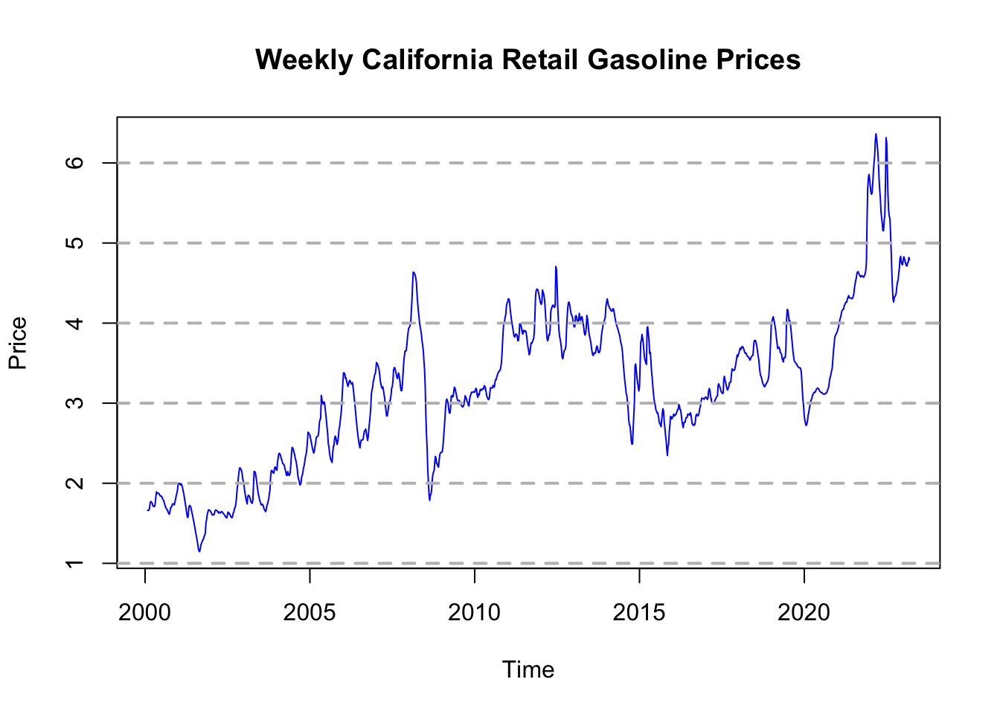
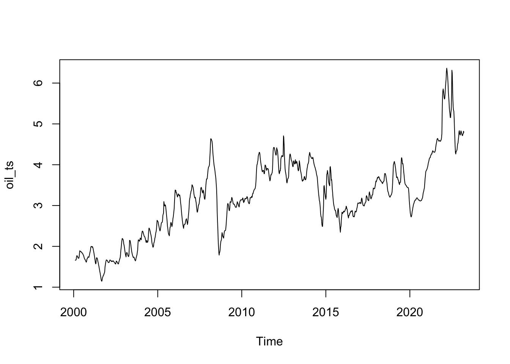
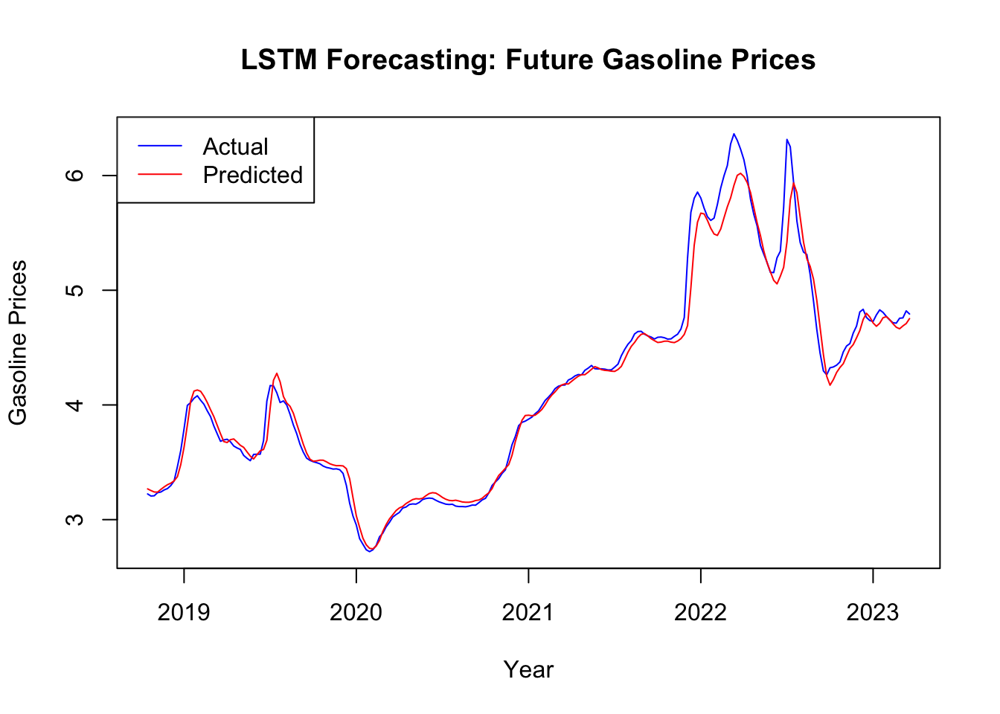
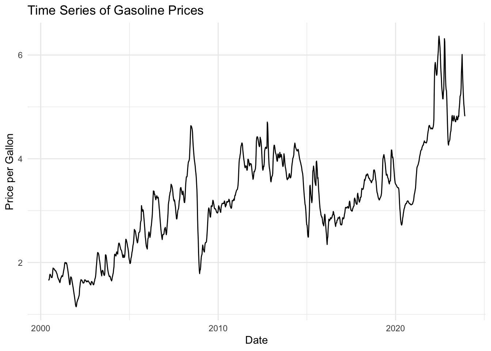
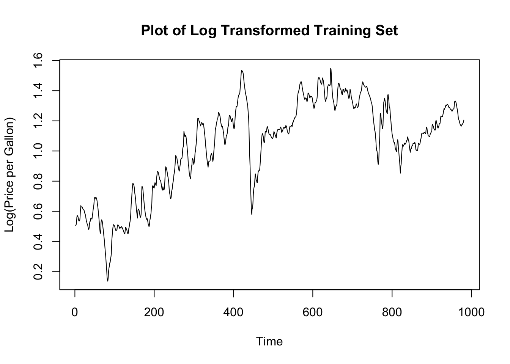
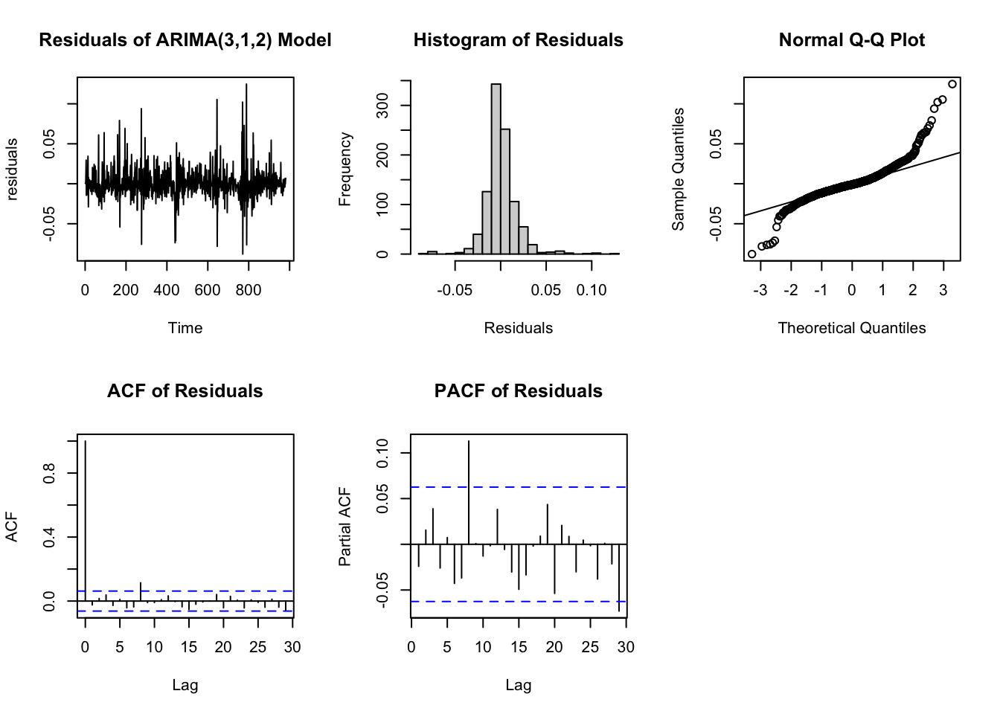
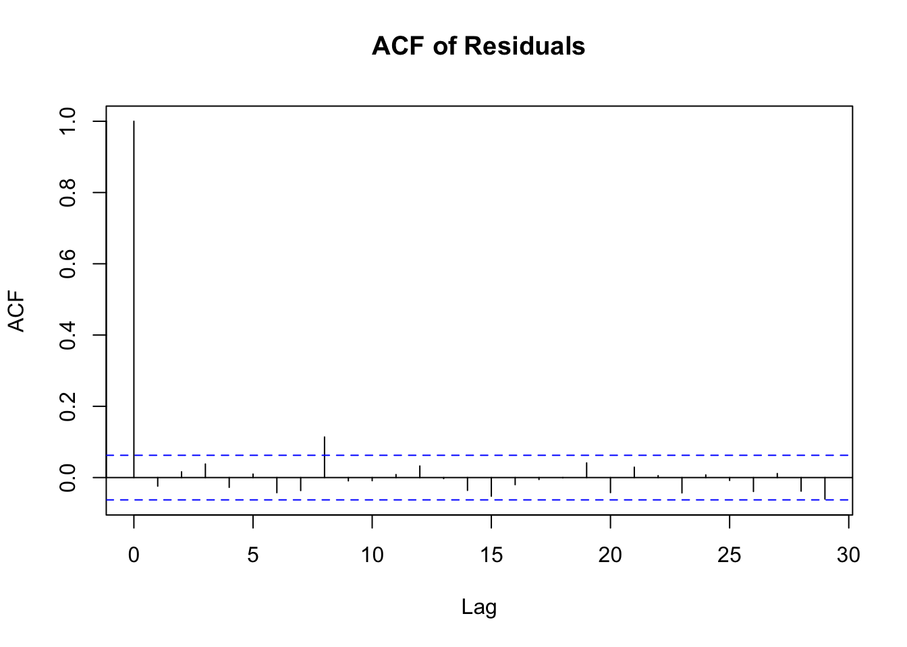
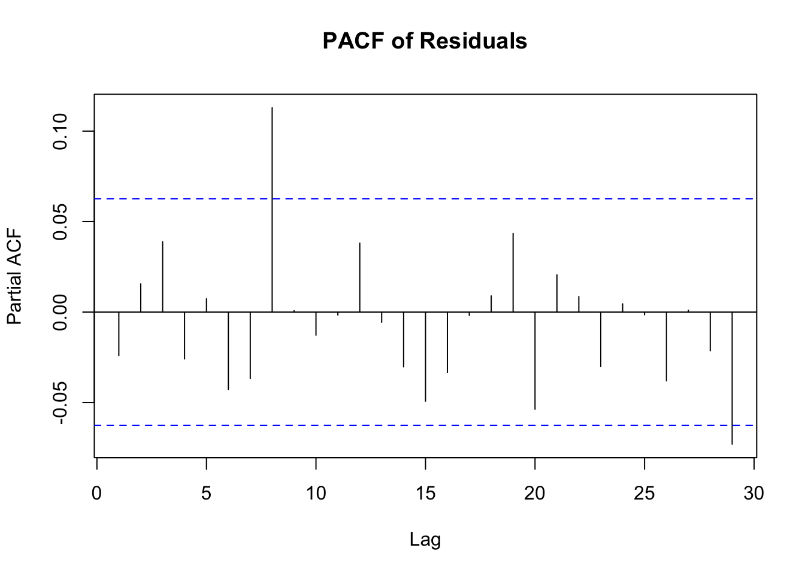
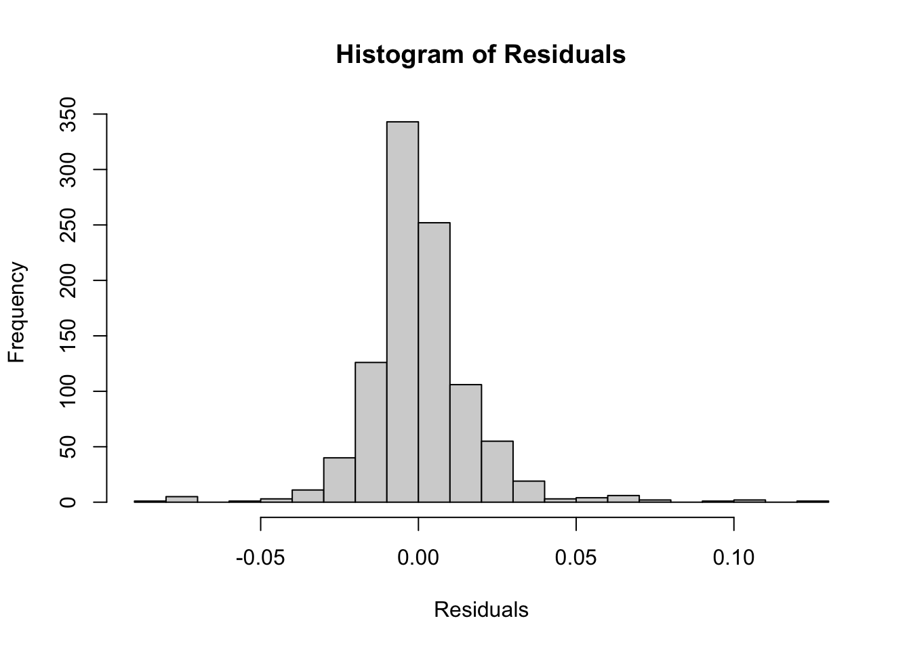
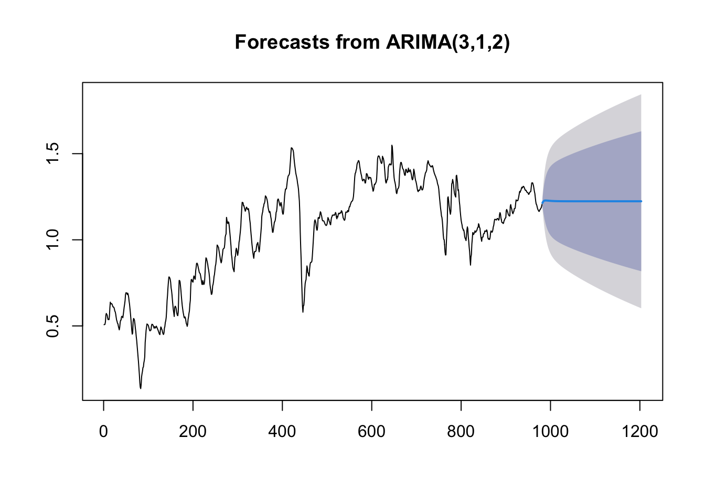

Vignette: Time Series Forecasting: Forecasting Future Gasoline Prices in California
Author
Patrick Moon, Sharon Lee, Matthew Lee
Published
December 13, 2023
Data Description and EDA
Before applying time series forecasting models such as LSTM and ARIMA model, we will explore and understand the patterns and characteristics of our weekly gasoline prices trends in California.
We will load all the necessary packages.
library(tidyverse)
── Attaching core tidyverse packages ──────────────────────── tidyverse 2.0.0 ──
✔ dplyr 1.1.4 ✔ readr 2.1.4
✔ forcats 1.0.0 ✔ stringr 1.5.1
✔ ggplot2 3.4.4 ✔ tibble 3.2.1
✔ lubridate 1.9.3 ✔ tidyr 1.3.0
✔ purrr 1.0.2
── Conflicts ────────────────────────────────────────── tidyverse_conflicts() ──
✖ dplyr::filter() masks stats::filter()
✖ dplyr::lag() masks stats::lag()
ℹ Use the conflicted package (<http://conflicted.r-lib.org/>) to force all conflicts to become errors
library(readr)library(lubridate)library(forecast)
Registered S3 method overwritten by 'quantmod':
method from
as.zoo.data.frame zoo
library(fda)
Loading required package: splines
Loading required package: fds
Loading required package: rainbow
Loading required package: MASS
Attaching package: 'MASS'
The following object is masked from 'package:dplyr':
select
Loading required package: pcaPP
Loading required package: RCurl
Attaching package: 'RCurl'
The following object is masked from 'package:tidyr':
complete
Loading required package: deSolve
Attaching package: 'fda'
The following object is masked from 'package:forecast':
fourier
The following object is masked from 'package:graphics':
matplot
Rows: 1226 Columns: 2
── Column specification ────────────────────────────────────────────────────────
Delimiter: ","
chr (1): Week of
dbl (1): Weekly California All Grades All Formulations Retail Gasoline Price...
ℹ Use `spec()` to retrieve the full column specification for this data.
ℹ Specify the column types or set `show_col_types = FALSE` to quiet this message.
head(gasoline)
# A tibble: 6 × 2
`Week of` Weekly California All Grades All Formulations Retail Gasoline Pri…¹
<chr> <dbl>
1 11/27/2023 4.82
2 11/20/2023 4.88
3 11/13/2023 4.98
4 11/6/2023 5.06
5 10/30/2023 5.18
6 10/23/2023 5.33
# ℹ abbreviated name:
# ¹`Weekly California All Grades All Formulations Retail Gasoline Prices Dollars per Gallon`
First, we need to load the dataset. Since the dataset contains some unnecessary rows and is not formatted correctly, we cleaned our dataset, and we will be using our processed data.
We need to ensure that Date is converted into “Date” format and rows are rearranged in chronological order.
dim(gasoline) ## 1226 obs. and 2 variables (Date, Price)
[1] 1226 2
The gasoline dataset contains weekly California retail gasoline price (in US Dollars per gallon) from June 5, 2000 to November 27, 2023. It has 1226 observations in total and 2 variables - Date and Price.
summary(gasoline$Price)
Min. 1st Qu. Median Mean 3rd Qu. Max.
1.146 2.519 3.184 3.207 3.859 6.364
When we look at the summary of the dataset, we can see that the lowest price is 1.146 and the highest gasoline price was 6.364. The gasoline price on average is 3.207.
# A tibble: 2 × 2
Date Price
<date> <dbl>
1 2001-12-31 1.15
2 2022-06-13 6.36
Throughout the 23 years of gasoline price change, the lowest price of 1.146 was on Dec 31st, 2001, and the highest price of 6.364 was on Jun 13, 2022.
Let’s plot the overall dataset. The frequency will be 52 because the dataset is weekly collected.
x <-ts(gasoline$Price, start=c(2000,5), end=c(2023,11), frequency=52)plot.ts(x, type="l", main="Weekly California Retail Gasoline Prices", ylab="Price",col="blue") grid(nx =NA, ny =NULL, lty =2, col ="gray", lwd =2)

From the plot, we can see that the overall price is increasing over time. Multiple fluctuations are found, but the price tends to drop once it hits the peak. It also does not seem to have any clear seasonal pattern.
LSTM
We will now do time series analysis on our data using neural networks through the Keras library. We will specifically be using a LSTM model which will dive into in more detail later.
Creating Time Series
We will now convert our data into a time series object using the ts function and plot our time series.
oil_price <- gasoline$Priceoil_ts <-ts(data = oil_price, start =c(2000, 6), end =c(2023, 12), frequency =52)plot(oil_ts)

Data Preparation
Now that we have our data as a time series object we will get ready to do our neural network modeling. First we define our window size for our model which will be 10 in this case. The window size is the amount of previous observations that our model will use to predict the next point. We will also split our time series into a training and testing group using the first 80% for training and the remaining 20% for testing.
We also created lists of the dates for each group for plotting later on.
Sequence Creation
LSTM models are powerful because we can train them using sequences instead of individual observations. For our model we will have sequences of length 10 (our window size). We will first create a function that will take take in our data values and window size and return a list containing a 3D array of the sequences and a numeric vector of our labels which are the values that each sequence is predicting.
We will now build a simple LSTM model to predict future gas prices.
LSTMs are a type of recurrent neural network (RNN) that are good at learning from sequences of data and are particularly effective for time series forecasting because they can remember information over long periods, which is crucial for understanding trends and patterns in time series data.
model <-keras_model_sequential() %>%layer_lstm(units =50, input_shape =c(window_size, 1)) %>%layer_dense(units =1)
Our model consists of an LSTM layer that processes the sequential data, followed by a dense layer for output.
Now that we have created our model we will compile it using mean squared error as our loss function, nadam as our optimizer, and mean absolute error as our performance metric. We are using nadam instead of adam so we can adjust the learning rate of our model. For this model we are using a learning rate of 0.001.
Looking at our training data it looks like that our model converges to a mean absolute error of around 0.06
Evaluating Our Model
Now that we have trained our model we will evaluate it on our testing set. We first create our test data sequences and then use the evaluate function to see how well our model did.
It seems that our model did slightly worse on our testing data with a mean absolute error of 0.08 but it still performs very well. Also, we will be comparing this mean absolute error with our ARIMA model forecast in the future.
We will now make predictions using our model and plot it over the actual data to visually see how our model performs.
predictions <- model %>%predict(test_sequences_matrix)
8/8 - 3s - 3s/epoch - 316ms/step
# Plot predictions against actual valuesplot(test_dates, test_labels, type ='l', main="LSTM Forecasting: Future Gasoline Prices", col ='blue', ylab ='Gasoline Prices', xlab ='Year')lines(test_dates, predictions, col ='red')legend('topleft', legend =c('Actual', 'Predicted'), col =c('blue', 'red'), lty =1)

Looking at the plot it seems that our model actually performed very well and looks very similar to the actual testing data.
ARIMA Modeling
Before diving into the specifics of the code, it’s crucial to understand the concept of stationarity in time series analysis. A time series is said to be stationary if its statistical properties, such as mean, variance, and autocorrelation, are constant over time. In simpler terms, a stationary time series does not exhibit trends or seasonality and has a consistent structure over time, which makes it predictable.
Stationarity is a fundamental assumption in many time series forecasting methods, including ARIMA modeling. This is because predictable behavior in the past will likely persist in the future, making the forecasts more reliable. Non-stationary time series, on the other hand, can change their behavior over time, leading to unreliable and inaccurate predictions.
There are two main types of non-stationarity:
Trend Stationarity: Where the series has an underlying trend, but the fluctuations around this trend are stationary. Difference Stationarity: Where the series becomes stationary after differencing, i.e., subtracting the current value from the previous value.
The Augmented Dickey-Fuller (ADF) test, which we perform in our analysis, specifically tests for difference stationarity.
With this understanding, we perform the Augmented Dickey-Fuller (ADF) test to check whether our time series data (the gasoline prices) is stationary. This test evaluates the null hypothesis that the time series can be represented by a unit root, indicating it is non-stationary. Essentially, if the test finds strong evidence of a unit root, the time series is likely non-stationary, and vice versa.
adf_test_result <-adf.test(oil_ts, alternative ="stationary")print(adf_test_result)
Augmented Dickey-Fuller Test
data: oil_ts
Dickey-Fuller = -3.4331, Lag order = 10, p-value = 0.04873
alternative hypothesis: stationary
In this output, the Dickey-Fuller statistic is -3.4466, and the p-value is 0.04743. The p-value is crucial for our decision-making: a low p-value (typically < 0.05) implies that the null hypothesis of non-stationarity can be rejected. Therefore, in our case, with a p-value of 0.04743, we conclude that the time series is stationary. This means that our time series does not have unit root characteristics and is suitable for ARIMA modeling.
Before modeling, we split our data to avoid lookahead bias:
# Determining the split point for training and testing setssplit_point <-round(nrow(gasoline) *0.8)# Creating the training and testing setstraining_set <- oil_ts[1:split_point]testing_set <- oil_ts[(split_point +1):length(oil_ts)]
This division allows us to evaluate our model on unseen data.
Before moving on to building the model, we can clearly observe the big variance shown in the graph:
# Plotting the time series dataggplot(gasoline, aes(x = Date, y = Price)) +geom_line() +theme_minimal() +labs(title ="Time Series of Gasoline Prices",x ="Date",y ="Price per Gallon")

To address non-stationarity aspects like high variance, we apply log transformation:
logdata <-log(training_set)
# Plot the logtrain datats.plot(logdata, main ="Plot of Log Transformed Training Set",ylab ="Log(Price per Gallon)", xlab ="Time")

var(oil_ts)
[1] 0.9405439
var(logdata)
[1] 0.09608259
The results show a significant reduction in variance, indicating our transformations were effective.
After preparing our data and ensuring it is suitable for time series analysis, we proceed to model selection. The choice of the appropriate ARIMA model is crucial to accurately capturing the underlying patterns in our time series data.
We use the auto.arima function from the forecast package to automatically determine the best fitting ARIMA model. The auto.arima function explores various combinations of AR (autoregressive), I (integrated), and MA (moving average) components to identify the model that best fits our data. It does so by minimizing the AIC (Akaike Information Criterion), a measure that balances the model’s fit against its complexity.
# Using auto.arima to find the best ARIMA modeloptimal_arima_model <-auto.arima(logdata)summary(optimal_arima_model)
Series: logdata
ARIMA(3,1,2)
Coefficients:
ar1 ar2 ar3 ma1 ma2
0.6502 0.9062 -0.6064 0.0131 -0.9597
s.e. 0.0293 0.0267 0.0273 0.0154 0.0149
sigma^2 = 0.0003082: log likelihood = 2572.98
AIC=-5133.95 AICc=-5133.87 BIC=-5104.63
Training set error measures:
ME RMSE MAE MPE MAPE MASE
Training set 0.0006715805 0.01750127 0.01136695 0.06212362 1.299757 0.7060412
ACF1
Training set -0.02405518
From the summary above, this model, ARIMA(3,1,2), suggests a somewhat complex dynamic in the data, with three autoregressive terms, one level of differencing, and two moving average terms. The coefficients of the model and their standard errors provide insights into the significance and impact of each term in the model. Lower AIC and BIC values indicate a better model fit, taking into account the number of parameters.
Model Diagnostics
After fitting the ARIMA model, we analyze its residuals to assess the adequacy of the model. The plots of residuals, their ACF, and PACF, along with the histogram and Q-Q plot, are crucial for understanding whether the residuals behave like white noise, which is a key assumption in ARIMA modeling. The histogram and Q-Q plot assess the normality of the residuals.
# Fit the ARIMA(3,1,2) model to the log-trasformed datafit_arima <-Arima(logdata, order =c(3,1,2))# Check the residualsresiduals <-residuals(fit_arima)plot(residuals, main ="Residuals of ARIMA(3,1,2) Model")

acf(residuals, main ="ACF of Residuals")

pacf(residuals, main ="PACF of Residuals")

hist(residuals, main ="Histogram of Residuals", xlab ="Residuals", breaks =30)

qqnorm(residuals); qqline(residuals)
Finally, we conduct statistical tests to further assess the residuals:
# Shapiro-Wilk test for normalityshapiro_test <-shapiro.test(residuals)print(shapiro_test)
Shapiro-Wilk normality test
data: residuals
W = 0.87765, p-value < 2.2e-16
ljung_box_test <-Box.test(residuals, lag =12, type ="Ljung-Box", fitdf =5)print(ljung_box_test)
# Ljung-Box test for autocorrelation in squared residuals (to check for ARCH effects)# Here also, we use the same lag valueljung_box_test_squared <-Box.test(residuals^2, lag =12, type ="Ljung-Box", fitdf =5)print(ljung_box_test_squared)
Shapiro-Wilk Normality Test: This test checks the normality of the residuals. The result (W = 0.87765, p-value < 2.2e-16) suggests a significant deviation from normality. This might indicate that the model fails to capture some aspect of the data’s behavior, a common challenge in economic time series influenced by complex, non-linear factors.
Box-Ljung Test on Residuals: This test assesses autocorrelation in the residuals. The result (X-squared = 20.325, df = 7, p-value = 0.004909) implies significant autocorrelation, suggesting that the model might not be capturing all the temporal dependencies in the data.
Box-Ljung Test on Squared Residuals: This test checks for autocorrelation in squared residuals, indicating ARCH effects. The result (X-squared = 126.84, df = 7, p-value < 2.2e-16) points to the presence of time-varying volatility, a common feature in financial data but difficult to model with standard ARIMA.
The results of the diagnostic tests reveal some limitations of the ARIMA(3,1,2) model in fully capturing the dynamics of the gasoline price data. The complex nature of economic time series, often driven by human behavior and external factors, poses challenges to linear modeling approaches like ARIMA. Future explorations might involve more sophisticated models, including those that can handle non-linearity and volatility, such as GARCH models, or the use of machine learning techniques for more robust forecasting in the face of such complex data.
# Forecasting future values using the fitted ARIMA modelh <-length(testing_set) # Number of periods to forecast should match the length of testing_setforecasted_values <-forecast(fit_arima, h = h)# Plotting the forecasted valuesplot(forecasted_values)

The provided plot above illustrates the forecasts from an ARIMA(3,1,2) model alongside historical data. The historical time series data, represented by a fluctuating line, transitions into the forecasted period where a blue line indicates the model’s predicted values, surrounded by shaded areas denoting confidence intervals. These intervals represent the uncertainty inherent in the predictions, with uncertainty naturally broadening as the forecast extends further into the future. Notably, the forecasts appear relatively stable, suggesting that the model either captures the persistence of the series or may not fully reflect potential future volatility. While the visual stability of the forecast is evident, actual model performance should be quantitatively assessed against the actual observed values using metrics like MAE and RMSE, which are not visible on this plot but are crucial for evaluating the model’s predictive accuracy.
To validate the model, compare the forecasted values against the actual values in the testing set. This comparison can be done using various error metrics:
# Assuming 'testing_set' contains the actual future values for comparisonactual_values <- testing_set# Extracting the point forecastspoint_forecasts <- forecasted_values$mean# Calculating error metricsvalidation_errors <- actual_values - point_forecastsmae <-mean(abs(validation_errors)) # Mean Absolute Error# Print error metricsprint(paste("MAE:", mae))
[1] "MAE: 2.96164288179362"
This code performs model validation by comparing the actual values from the test set with the forecasted values produced by an ARIMA model. The mean of the forecasted values, forecasted_values$mean, represents the model’s predictions. The code calculates the Mean Absolute Error (MAE) by subtracting these forecasts from the actual observed values to obtain the forecasting errors, then taking the average of their absolute values. The resulting MAE of approximately 2.962 indicates that, on average, the model’s predictions deviate from the true values by about 2.962 units. This metric provides a straightforward assessment of the model’s accuracy, with its magnitude and acceptability dependent on the specific context of the data and the modeling objectives.
This MAE value is very high compared to the LSTM model’s forecast, and we will compare this result in the conclusion.
Conclusion
MAE Comparison
After running both the ARIMA and LSTM models, the LSTM model performed far better than the ARIMA model. On our testing data, the ARIMA model has a mean absolute error(MAE) of 2.962 while the LSTM model had an MAE of about 0.08. For gas prices, a low MAE is important because the error amount adds for each gallon of gas you get.